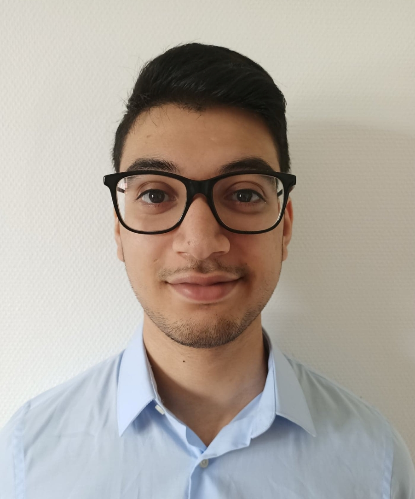

My name is Osama TARUF and I’m passionate of programming and new technologies, I was always fascinated by websites and mobile applications. I’m looking for an apprenticeship contract to complete my formation with ETNA.
Thanks to my previous professional experiences as commercial counsellor,
i learned how to work as a team and surpass myself to reach the goals. I learned a lot about myself and how to make me responsible during my trip to Australia for a year.
I wish to apply my skills at the service of my futur company.
Je m'appelle Osama TARUF et je suis un passioné de programmation et des nouvelles technologies. J'ai toujours été fasciné par les sites internets et les applications mobiles.
Je suis à la recherche d'un contrat d'apprentissage pour compléter ma formation à l'ETNA. Grâce à mes précèdentes expériences professionnelles en tant que conseiller commercial,
j'ai appris à travailler en équipe et à me surpasser pour atteindre les objectifs fixés. J'ai également beaucoup appris sur moi-même et à me responsabiliser lors de mon voyage d'un an en Australie.
Je souhaite mettre mes compétences au service de ma future entreprise.
What I’m looking for
Ce que je recherche
I'm looking for a company which i could improve my current skills and learn more about new technologies. I'm very motivated and ready to fully invest myself for a company and take responsabilities
Je cherche une entreprise dans laquelle je puisse améliorer mes compétences actuelles et en apprendre sur les nouvelles technologies
Etant très motivé, je suis prêt à m'investir pleinement au sein de l'entreprise et à endosser des responsabilités.
What I wish to do next
Ce que je souhaite faire ensuite
To be an web developer Full-Stack for my company. I'm looking for a company which i could stay and start my career.
Pour que je puisse être un développeur full stack pour mon entreprise. Je cherche idéalement une entreprise dans laquelle je puisse rester et faire ma carrière.
Retraining
La reconversion profesionnelle
After working as commercial counsellor for telecoms during severals years, i decided to start over to do something which has always fascinated me: programming
I started to learn programming thanks to OpenClassroom free classes and I had a appointment to start a 6-12month formation for web developer by Pole emploi.
A friend of mine told me about ETNA a programming school made for retraining people with the possibility of having an apprenticeship contract so I decided to take my chance and I went to ETNA.
Ayant travailé en tant que conseiller comercial pour des opérateurs télécoms pendant des années, j'ai décidé de recommencer à zéro pour me lancer un domaine qui me passione depuis toujours:
l'informatique. J'ai commencé à apprendre l'informatique grâce aux cours d'OpenClassroom et au final j'ai pris un rendez vous pour suivre une formation de 6 à 12 mois par Pôle emploi pour devenir développeur web.
Un amis à moi m'a parlé de l'ETNA, une école faite pour les personnes en reconversion profesionnelle avec la possibilité de pouvoir faire ses études en alternance. J'ai donc saisi ma chance et décidé d'aller à l'ETNA.
You can have a look on my CV in english HERE
Vous pouvez accéder à mon CV en Français ICI